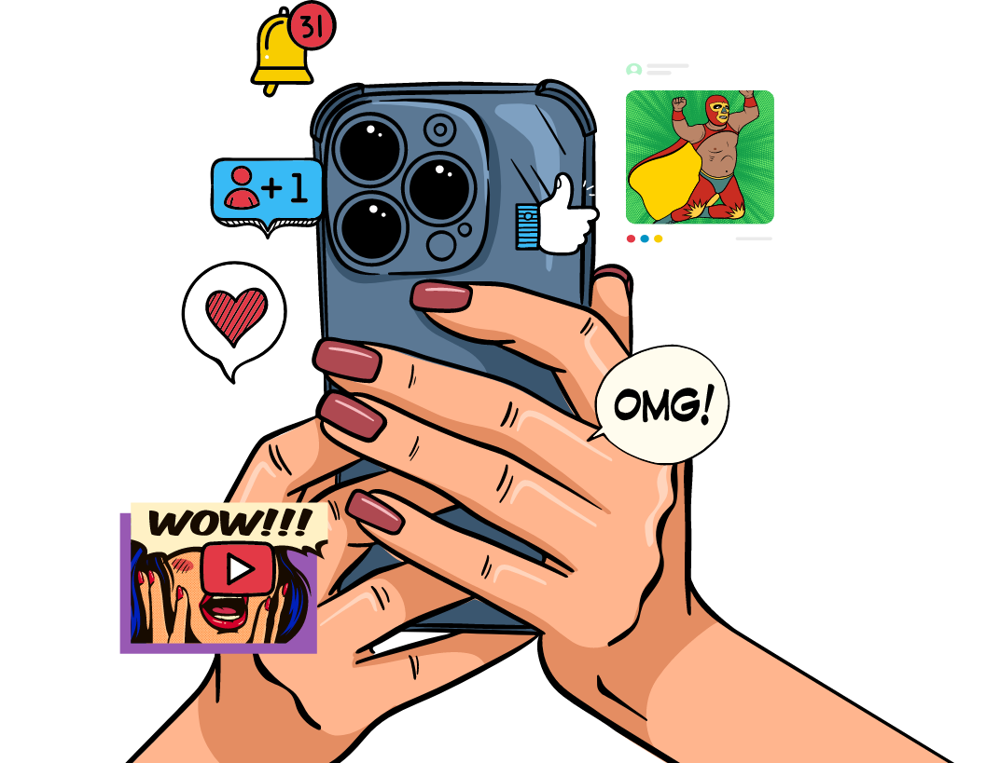

    <div class="service-page-sns-marketing service-page">
        <div class="service-page-wrapper service-page-sns-marketing-wrapper">
            <div class="service-page-image service-page-sns-marketing-image-wrapper">
                <picture class="service-page-sns-marketing-image" >
                    <source
                        src="../../image/sns-marketing/service-sns.png"
                        srcset="../../image/sns-marketing/service-sns.png"
                        media="(min-width: 768px)"
                    >
                    <source
                        src="../../image/sns-marketing/service-sns-mobile@2x.png"
                        srcset="../../image/sns-marketing/service-sns-mobile.png 1x, ../../image/sns-marketing/service-sns-mobile@2x.png 2x, ../../image/sns-marketing/service-sns-mobile@3x.png 3x"
                    >
                    
                </picture>
            </div>
            <div class="service-page-text service-page-sns-marketing-text">
                <h6 class="service-page-caption">
                    My Services
                </h6>
                <h2 class="service-page-title">
                    Responsive Design
                </h2>
                <h3 class="service-page-desc">
                    <p>
                        We live in a world where users access websites on every screen 
                        imaginable. I don't treat responsive design as just a checkbox—I treat 
                        it as the foundation of every modern web experience. My approach ensures 
                        that every interface works flawlessly across devices, from 
                        mobile phones to ultrawide monitors.  <br> <br>

                        I design experiences that feel alive on every platform: mobile layouts that 
                        spark engagement, tablet interfaces that feel natural, desktop experiences 
                        that inspire exploration, and cross-platform consistency that builds trust. 
                        Every screen has its own character, and I tailor each design to capture the 
                        right feel, rhythm, and flow.  <br> <br>
                        
                        The result? Digital products that not only reach people but connect with 
                        them—interfaces that leave lasting impressions rather than just passing views.
                    </p>
                </h3>
                <div class="back-button">
                    <div class="back-button-wrapper">
                        
                        <p> BACK </p>
                    </div>
                </div>                
            </div>
        </div>
    </div>    